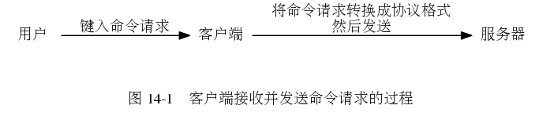

用户通过客户端向服务器发送命令请求的过程。

服务器向用户返回命令回复的过程。
Redis 的命令表示例。
服务器判断是否需要执行持久化操作的流程。
第 13 章： 客户端
第 15 章： 复制
Enter search terms or a module, class or function name.
![digraph {
label = "\n\n 图 14-8 客户端接收并打印命令回复的过程";
rankdir = LR;
node [shape = plaintext];
user [label = "用户"];
client [label = "客户端"];
server [label = "服务器"];
//
server -> client [label = "回复处理器将协议格式的\n命令回复返回给客户端"];
client -> user [label = "将回复格式化成人类可读格式 \n 然后打印显示"];
}](_images/graphviz-d5c3b1b146228297a7057d1d8fdf11e80badb1de.png)
![digraph {
label = "\n 图 14-4 命令表";
rankdir = LR;
node [shape = record];
commands [label = " 命令表 | ... | <set> \"set\" | <get> \"get\" | ... | <sadd> \"sadd\" | ... | <rpush> \"rpush\" | ... | <publish> \"publish\" | ... ", width = 2.0];
set [label = " <head> redisCommand | name \n \"set\" | <proc> proc | arity \n -3 | sflags \n \"wm\" | ... "];
get [label = " <head> redisCommand | name \n \"get\" | <proc> proc | arity \n 2 | sflags \n \"r\" | ... "];
//sadd [label = " <head> redisCommand | name \n \"sadd\" | <proc> proc | arity \n -3 | sflags \n \"wm\" | ... "];
//rpush [label = " <head> redisCommand | name \n \"rpush\" | <proc> proc | arity \n -3 | sflags \n \"wm\" | ... "];
//publish [label = " <head> redisCommand | name \n \"publish\" | <proc> proc | arity \n 3 | sflags \n \"pltr\" | ... "];
node [shape = plaintext];
setCommand [label = "void setCommand(redisClient *c);"];
getCommand [label = "void getCommand(redisClient *c);"];
//saddCommand;
//rpushCommand;
//publishCommand;
//
commands:set -> set:head; set:proc -> setCommand;
commands:get -> get:head; get:proc -> getCommand;
//commands:sadd -> sadd:head; sadd:proc -> saddCommand;
//commands:rpush -> rpush:head; rpush:proc -> rpushCommand;
//commands:publish -> publish:head; publish:proc -> publishCommand;
//* fix editor highlight
}](_images/graphviz-38d1a443b5626e8fd50f5981d0f2abd010efe0d7.png)
![digraph {
label = "\n 图 14-9 判断是否需要执行持久化操作";
//
node [shape = box]
start [label = "服务器没有在执行任何持久化操作"]
delay_bgrewriteaof_exists_or_not [shape = diamond, label = "有 BGREWRITEAOF 被延迟？"]
go_bgrewriteaof [label = "执行 BGREWRITEAOF"]
bgsave_satisfied_or_not [shape = diamond, label = "自动保存的条件已经满足？"]
go_bgsave [label = "执行 BGSAVE"]
bgrewriteaof_satisfied_or_not [shape = diamond, label = "AOF 重写的条件已经满足？"]
go_do_nothing [label = "不做动作"]
//
start -> delay_bgrewriteaof_exists_or_not
delay_bgrewriteaof_exists_or_not -> go_bgrewriteaof [label = "是"]
delay_bgrewriteaof_exists_or_not -> bgsave_satisfied_or_not [label = "否"]
bgsave_satisfied_or_not -> go_bgsave [label = "是"]
bgsave_satisfied_or_not -> bgrewriteaof_satisfied_or_not [label = "否"]
bgrewriteaof_satisfied_or_not -> go_bgrewriteaof [label = "是"]
bgrewriteaof_satisfied_or_not -> go_do_nothing [label = "否"]
}](_images/graphviz-0ba4963a397efe2b4badfd5a33bbfecc2b9cb00a.png)